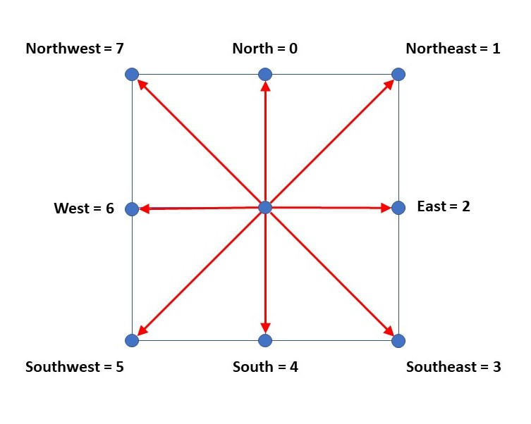
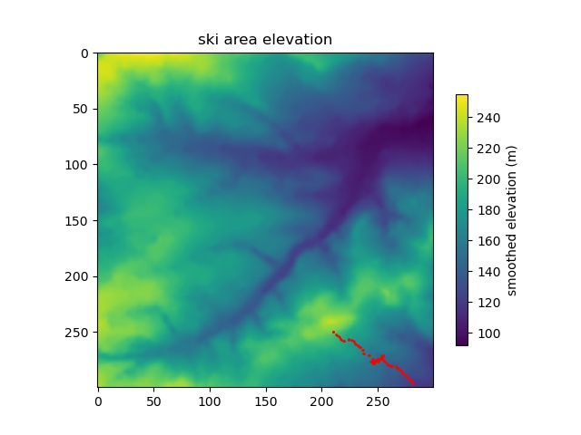

Figure 1. Ski area elevation. The grid is 300 x 300 cells. Maximum elevation is 255 m and minimum elevation is 92 m.
The objective of this assignment is to write a python program to first read a file containing the elevation data of a ski area (space separated text file in a grid format). Then to calculate the maximum gradient at each point within the ski area. Two plots must be created, one for elevation and a second for maximum gradient. The maximum gradient data must then be written to an output file with the same format as the input file.
The python program written for this assignment is snow.py. The input elevation file is snowslope.txt and the output file is gradient.txt. To run the program type> python snow.py
The main task of the program is to perform a moving gradient calculation on a regular grid of data. A simple way to do this to use the numpy array type from the python numpy library. The numpy.loadtxt function is also very useful for loading the regular grid file directly into a numpy array. The matplotlib library was used for plotting the maps.
The ski area elevation is shown in Figure 1. The input file has 300 x 300 cells. Cell separation is assumed to be 1 metre and elevation is also in metres. It is assumed that the first row of cells in the file corresponds to the northern most row, this is to match the gif image that was provided for the exercise.
Figure 1. Ski area elevation. The grid is 300 x 300 cells. Maximum elevation is 255 m and minimum elevation is 92 m.
The gradient is calculated at each raster cell by comparing its elevation with the elevations of the eight surrounding cells (Figure 2). In this way there are eight gradients: one to the north, one to the northeast, one to the east, one to the southeast etc.
North gradient is = (elevation of cell 2 minus elevation of cell 0)/1.0
Northeast gradient is = (elevation cell 3 minus elevation cell 0)/(sqrt(2))
South gradient is = (elevation cell 7 minus elevation cell 0)/1.0
This method works for all the internal cells. For the boundary cells a slight modification is required. If Cell 0 falls on the northern boundary of the model then the north, northwest, and northeast gradients are assumed zero. Similarly, if Cell 0 is in the northwest corner of the model then only the east, southeast and south gradients are calculated, the other gradients are assumed to be zero.
It would have been possible to apply this methodology by looping through all cells and including a number of IF clauses, however the code runs quicker if we loop through the internal cells first and then have separate loops for each boundary.
The absolute gradient in all eight directions is calculated and the maximum value stored for each cell (Figure 3).
The maximum absolute gradient for all cells is written to the gradient.txt file in a space separated grid format.

Figure 2. In order to calculate the maximum gradient at the cell location the elevation of the central cell (0) and the elevation of the surrounding eight cells must be know.

Figure 3. Maximum absolute gradient at each raster cell.
Here we modify the previous program to calculate the path of a downhill skier through the terrain. The Python program is skier.py, the input elevation file is snowslope.txt. To run the program type> python skier.py
At each point we calculate the direction of maximum downhill gradient, and the cell is assigned a corresponding direction indicator between 0 and 7 (Figure 4.).
The skier is dropped randomly onto the mountain. He then moves in the maximum downhill direction until he skis off the map or reaches a maximum number of steps. The skier's path down the mountain is stored and at the end of the run his path is plotted on the elevation data.
Sometimes the skier gets stuck in a small bowl, with no downhill escape. In this case he jumps in a random direction for a predefined maximum distance (3 units). Sometimes he gets stuck in a bowl which is too big to jump out of ! To reduce the number of small bowls we smooth the elevation file before he starts his run.

Figure 4. The direction of maximum downhill gradient is calculated. The cell is then assigned a direction indicator to control which way the skier will move.

Figure 5. Red dots show the skiers route. Skier having a long run.

Figure 6. Red dots show the skiers route. Skier gets stuck in a large bowl that he cannot jump out of.

Figure 7. Red dots show the skiers route. Skier skis off the edge of the map.